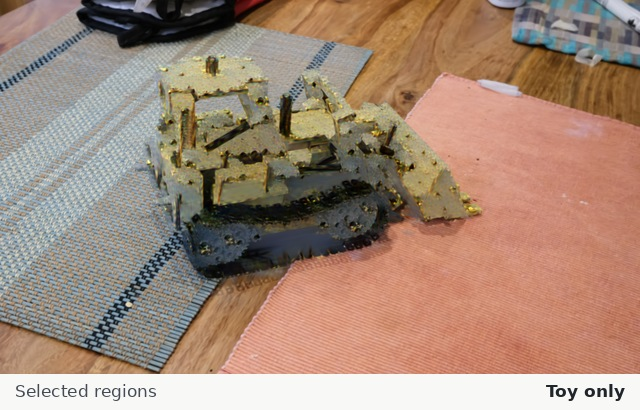
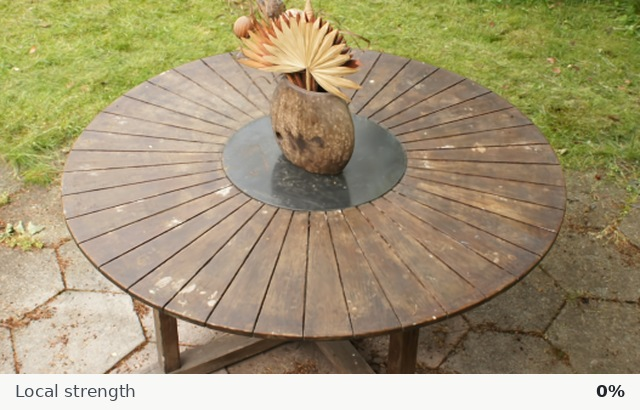
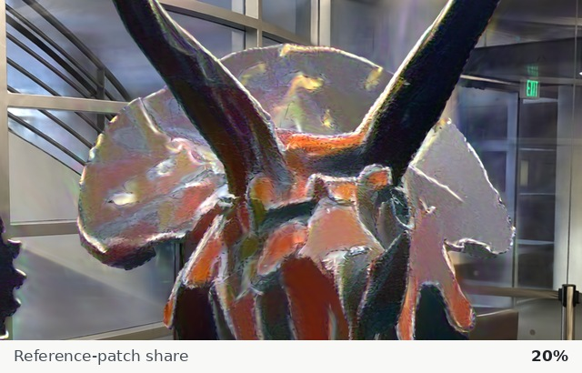

Select a region
Apply the same reference to the toy loader, the placemats, or both. Watch the surface of the bucket as the selection switches.

Claude Monet, The Magpie (1868–69), Musée d’Orsay. Image source
Controllable 3D Gaussian stylization with semantic regions and fused Gromov–Wasserstein transport
The same loader turns through 360° in both views. Reference 133 transfers the colors and stud pattern of LEGO bricks onto the bucket, cab and tracks.
Choose which 3D region receives a texture, how much of the reference to use, and where on the surface it appears.

Apply the same reference to the toy loader, the placemats, or both. Watch the surface of the bucket as the selection switches.
Claude Monet, The Magpie (1868–69), Musée d’Orsay. Image source

The ring marks the projection of a point on the bonsai. At each of three anchor positions, the selected patch supplies 50% of the transport mass. Watch how its texture shifts across the canopy.

Half of the transport mass comes from the selected reference patch. Nine bias settings redistribute it along the flower surface while the anchor stays fixed.

Follow the radial pattern on the tabletop as its stylized appearance strength changes from 0% to 50% to 100%.

The selected reference patch supplies 20%, 50%, then 80% of the transport mass for the edited region. Compare the markings below the horns.